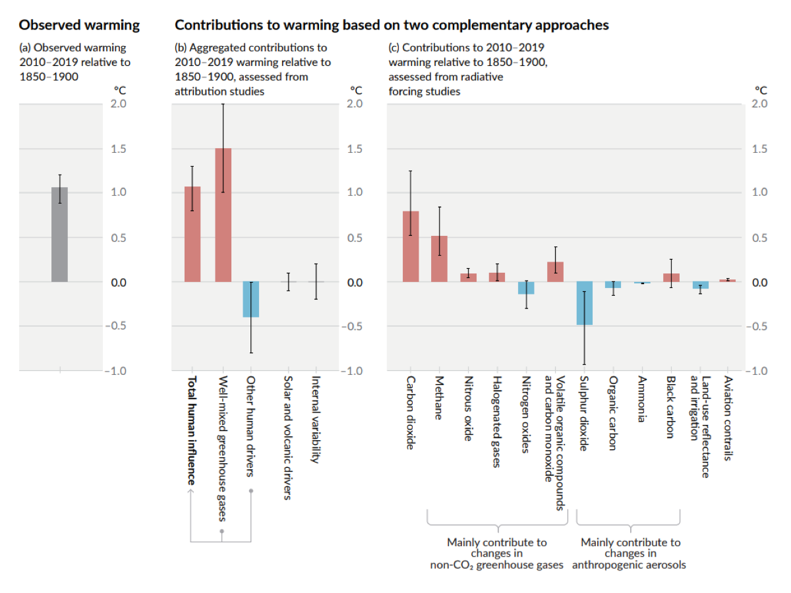
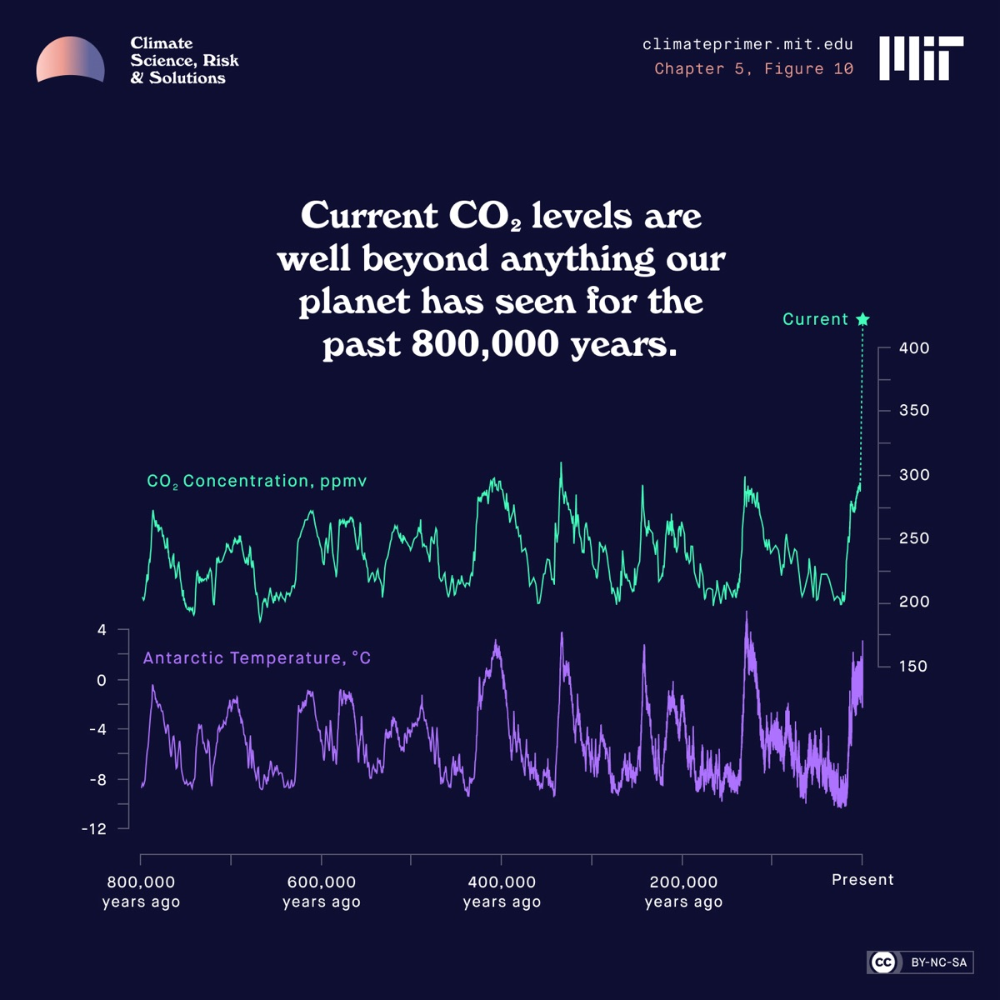
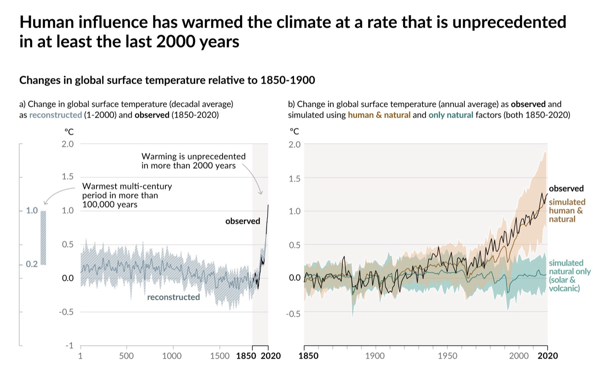

Abstract
This article systematically presents the scientific arguments that indisputably confirm the anthropogenic nature of climate change. Based on the latest reports from the Intergovernmental Panel on Climate Change (IPCC) and independent research, this work highlights four fundamental “scientific fingerprints.” The aim of the article is to provide the reader with a scientifically grounded toolkit to distinguish climate facts from myths and to understand the decisive role of human activity in the planet’s future.
Introduction
The reality of global warming is now an established fact, evident everywhere — from melting glaciers to the intensification of extreme weather events. However, less well-known are the scientific “fingerprints” that prove human activity is the primary cause.
Understanding the scientific basis for attributing climate change to human activity is crucial for informed decision-making. The confidence of the scientific community is not based on a single argument, but on multiple independent lines of evidence that all point to the same conclusion. This consensus is most clearly articulated by the world’s leading climate science body, the Intergovernmental Panel on Climate Change (IPCC), in its Sixth Assessment Report (AR6) Synthesis Report (2023):
Human activities, principally through emissions of greenhouse gases, have unequivocally caused global warming, with global surface temperature reaching 1.1°C above 1850–1900 in 2011–2020.
In this article, requiring just a four-minute read, we will present the four most compelling proofs that attribute modern climate change to the human factor.
Proof 1 · The Atmospheric “Fingerprint”
This line of evidence holds strategic significance, as it allows scientists to distinguish warming driven by solar activity from warming caused by the anthropogenic greenhouse effect. It directly answers one of the most common counter-arguments: “Warming is simply the result of the Sun getting hotter.”
If the recent warming were caused by an increase in solar energy, we would expect to see warming throughout the entire atmosphere — from the lower layer where we live (the troposphere) up to the upper layers (the stratosphere). Solar energy heats the planet from the top down; therefore, a stronger Sun would heat all layers of the atmosphere on its way to the surface.
However, scientific observations show a diametrically opposite picture. As noted by the Intergovernmental Panel on Climate Change in its Sixth Assessment Report (2021), the data reveals:
- The troposphere is warming.
- The lower stratosphere is cooling.
This pattern is a consequence of the human factor. First, heat-trapping gases accumulate in the lower atmosphere and act like a blanket — trapping energy and warming the troposphere. Second, human-induced ozone depletion has simultaneously cooled the stratosphere. Ozone warms the stratosphere by absorbing the Sun’s ultraviolet radiation; the less ozone there is, the less radiation is absorbed, which leads to cooling. The IPCC concludes it is extremely likely that anthropogenic ozone depletion was the main driver of the cooling of the lower stratosphere (IPCC AR6, Finding A.1.3) [2].

This observed reality — a warming lower layer and a cooling upper layer — is the exact opposite of what would happen if solar activity were increasing. But it is precisely what climate models predicted as a consequence of human activity.
This tells us how the planet is warming. The next proof will show where the extra heat-trapping gases are coming from.
Proof 2 · The Source of Carbon Emissions
To confirm that the enhanced greenhouse effect is anthropogenic, scientists must prove that the massive increase in atmospheric carbon dioxide (CO2) is the result of our activities — specifically, the burning of fossil fuels — and not from natural sources like volcanoes or the oceans. So, how do we know that the extra CO2 in the atmosphere is actually ours?
Beyond the atmospheric structure, scientists can analyze the chemical composition of the carbon dioxide itself to determine its origin. This involves studying carbon isotopes — carbon atoms with slightly different atomic masses. This method provides a clear way to differentiate CO2 generated from natural sources from CO2 produced by burning fossil fuels.
While a detailed explanation of isotopic analysis requires data, the conclusion of the world’s leading scientific body, based on this and other evidence, is definitive. The IPCC’s 2021 AR6 report formulates its findings with the highest degree of confidence (IPCC AR6, Finding A.1.1) [4]:
Observed increases in well-mixed greenhouse gas (GHG) concentrations since around 1750 are unequivocally caused by human activities.
To emphasize the significance of our impact, the IPCC also places the scale of this change in a historical context. The report states that in 2019, atmospheric CO2 concentrations were higher than at any time in at least 2 million years (IPCC AR6, Finding A.2.1) [5]. This change is not only attributable to us, but it is entirely unprecedented in the history of our species.

The core scientific principle is that CO2 produced from burning fossil fuels has a unique isotopic signature. Fossil fuels were formed from ancient plant material. During photosynthesis, plants prefer to absorb the lighter Carbon-12 (12C) isotope over the heavier Carbon-13 (13C). When we burn coal, oil, and natural gas, we release this ancient, plant-derived carbon into the atmosphere.
As a result, CO2 from fossil fuels is depleted in 13C and relatively rich in 12C. Because we have emitted massive amounts of 13C-depleted carbon, the overall ratio of 13C to 12C in the atmosphere has decreased. Specific isotopic data is detailed in specialized studies (e.g., Rubino et al., 2013 on atmospheric 13C) and their significance is a cornerstone of climate change attribution. Measurements of atmospheric carbon composition show a clear and undeniable shift that perfectly matches the chronology of massive fossil fuel burning, expertly linking the extra CO2 in our atmosphere to human activity [7, 8].
Proof 3 · The Scale of Our Impact
A common skeptical counter-argument involves comparing anthropogenic emissions with volcanic emissions, suggesting that a few large eruptions could outweigh humanity’s impact. This proof addresses the question of scale by using comprehensive climate models that simulate the Earth’s climate both with and without human influence.
Scientific climate models are designed to account for all known climate-forcing factors. This includes “natural drivers,” which explicitly incorporate the effects of solar cycles and volcanic eruptions. As the IPCC notes, large, explosive volcanic eruptions historically have a temporary cooling effect on the planet’s surface lasting one to three years, rather than a warming effect. They inject reflective particles into the stratosphere that block sunlight (IPCC AR6, Finding C.1.4) [9].
The evidence provided by model simulations is even more direct. The IPCC’s Figure SPM.1b shows the results of simulating the past 170 years using only natural drivers, such as solar and volcanic activity.

The result is unequivocal: when models are run with only natural factors, they show no warming trend and completely fail to explain the temperature rise observed over the past century. The argument that volcanoes outweigh human influence is simply not supported by the data; in comprehensive climate models, their net effect does not produce the warming we observe.
Proof 4 · Climate Modeling and Attribution Science
Climate models are not just meant to predict the future; they are indispensable tools for testing hypotheses about the past. This process, known as “attribution science,” uses the same modeling framework mentioned in the previous proof, providing one of the most powerful confirmations of anthropogenic climate change.
The methodology is based on a framework often called counterfactual modeling. Scientists use the models depicted in the IPCC’s Figure SPM.1b to simulate the 20th-century climate twice:
- The factual world. A simulation that includes all known natural forces (solar cycles, volcanoes) and anthropogenic factors (greenhouse gas emissions, aerosols).
- The counterfactual world. A hypothetical simulation of what the climate would be like under the influence of only natural forces — as if the Industrial Revolution had never happened.
By comparing the model results with observed historical temperature data, scientists can isolate the impact of human activity. The results are striking and definitive:
- Natural factors only. The simulation fails completely. It predicts a flat temperature trend that bears no resemblance to the observed 1.1°C warming.
- Natural + anthropogenic factors. The simulation matches reality almost perfectly, tracking real-world historical temperature data with astonishing accuracy.
The clear conclusion is that the warming observed over the past century is impossible to explain without accounting for human-emitted greenhouse gases. Climate modeling has now advanced to the point where it can be applied to specific weather events. For example, analysis of the 2021 Pacific Northwest “Heat Dome” showed that this record-breaking event would have been “virtually impossible” without anthropogenic climate change [11].
Conclusion
These four proofs present a powerful and multifaceted justification for anthropogenic climate change. This is not a single argument, but a convergence of independent scientific facts that leads to a robust conclusion. And every single chain of these proofs points in the same direction: climate change is human-caused.
This is why the Intergovernmental Panel on Climate Change, representing the consensus of the global scientific community, made its most decisive statement to date in the 2023 AR6 report (IPCC AR6, Finding A.2.1) [12]:
It is unequivocal that human influence has warmed the atmosphere, ocean and land.
References
- Intergovernmental Panel on Climate Change. (2023). Summary for Policymakers. In: Climate Change 2023: Synthesis Report. Contribution of Working Groups I, II and III to the Sixth Assessment Report of the Intergovernmental Panel on Climate Change [Core Writing Team, H. Lee and J. Romero (eds.)]. IPCC, Geneva, Switzerland, pp. 1–34. https://doi.org/10.59327/IPCC/AR6-9789291691647.001
- Intergovernmental Panel on Climate Change. (2021). Climate Change 2021: The Physical Science Basis. Contribution of Working Group I to the Sixth Assessment Report of the Intergovernmental Panel on Climate Change [Masson-Delmotte, V., P. Zhai, A. Pirani, S.L. Connors, C. Péan, S. Berger, N. Caud, Y. Chen, L. Goldfarb, M.I. Gomis, M. Huang, K. Leitzell, E. Lonnoy, J.B.R. Matthews, T.K. Maycock, T. Waterfield, O. Yelekçi, R. Yu, and B. Zhou (eds.)]. Cambridge University Press. https://www.ipcc.ch/report/ar6/wg1/
- Figure SPM.2 in IPCC, 2021: Summary for Policymakers. In: Climate Change 2021: The Physical Science Basis. Cambridge University Press, Cambridge, UK and New York, NY, USA, pp. 3−32. doi: 10.1017/9781009157896.001
- Intergovernmental Panel on Climate Change. (2021). Climate Change 2021: The Physical Science Basis. Contribution of Working Group I to the Sixth Assessment Report of the Intergovernmental Panel on Climate Change [Masson-Delmotte, V., P. Zhai, A. Pirani, S.L. Connors, C. Péan, S. Berger, N. Caud, Y. Chen, L. Goldfarb, M.I. Gomis, M. Huang, K. Leitzell, E. Lonnoy, J.B.R. Matthews, T.K. Maycock, T. Waterfield, O. Yelekçi, R. Yu, and B. Zhou (eds.)]. Cambridge University Press. https://www.ipcc.ch/report/ar6/wg1/
- Ibid.
- MIT Climate Portal. (n.d.). CO2 levels [Infographic]. Massachusetts Institute of Technology. https://climateprimer.mit.edu/img/co2-levels.jpg
- Rubino, M., Etheridge, D. M., Trudinger, C. M., Allison, C. E., Battle, M. O., Langenfelds, R. L., … & White, J. W. C. (2013). A revised 1000-year atmospheric δ13C-CO2 record from Law Dome and South Pole, Antarctica. Journal of Geophysical Research: Atmospheres, 118(15), 8482–8499. View paper
- NOAA. (2024). Trends in Atmospheric Carbon Dioxide. Global Monitoring Laboratory. https://gml.noaa.gov/ccgg/trends/
- Intergovernmental Panel on Climate Change. (2021). Climate Change 2021: The Physical Science Basis. Contribution of Working Group I to the Sixth Assessment Report of the Intergovernmental Panel on Climate Change [Masson-Delmotte, V., P. Zhai, A. Pirani, S.L. Connors, C. Péan, S. Berger, N. Caud, Y. Chen, L. Goldfarb, M.I. Gomis, M. Huang, K. Leitzell, E. Lonnoy, J.B.R. Matthews, T.K. Maycock, T. Waterfield, O. Yelekçi, R. Yu, and B. Zhou (eds.)]. Cambridge University Press. https://www.ipcc.ch/report/ar6/wg1/
- Figure SPM.1 in IPCC, 2021: Summary for Policymakers. In: Climate Change 2021: The Physical Science Basis. Cambridge University Press, Cambridge, UK and New York, NY, USA, pp. 3−32. doi: 10.1017/9781009157896.001
- Ohanyan, N. (2026). The Overshoot: Life After the 1.5°C Limit. Independently published.
- Intergovernmental Panel on Climate Change. (2023). Summary for Policymakers. In: Climate Change 2023: Synthesis Report. Contribution of Working Groups I, II and III to the Sixth Assessment Report of the Intergovernmental Panel on Climate Change [Core Writing Team, H. Lee and J. Romero (eds.)]. IPCC, Geneva, Switzerland, pp. 1–34. https://doi.org/10.59327/IPCC/AR6-9789291691647.001